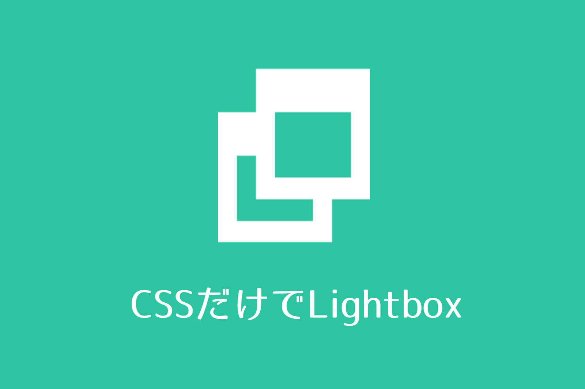

CSSのみでクリックで画像を拡大する（Lightboxもどき）

画像をクリックするとポップアップで拡大表示するプラグインを、HTMLとCSSのみで再現してみます。いわゆるLightboxやfancyboxのようなものです。
この記事で紹介する内容に実用性は全くありません。遊び半分でご覧ください。
デモ
画像拡大
下の画像をクリックしてみてください。
テキストにも拡大リンクを貼れます。
スイセンの写真を見る
弱点
記事に表示する画像と、拡大に使用する画像の2つを読み込む必要があります。SEO的にはあまり良くないと思います。
フィルター（黒い部分）は、画像を開いていない状態のときはpointer-eventsを用いてクリックイベントをオフにしていますが、開いていない状態でも常にフィルターは被さっているので、ちょっとキモいです。
また、pointer-eventsをサポートしていないブラウザで閲覧したときは、ページ全体のリンクがクリックできない状態に陥る可能性があります。
さらに、アンカーリンクを利用するので、画像を拡大すると履歴に残り、ブラウザで「戻る」操作が大変になります。
実装方法
CSS
.lb {
display: flex;
position: fixed;
width: 100%;
height: 100%;
top: 0;
left: 0;
justify-content: center;
align-items: center;
background: rgba(0,0,0,.7);
opacity: 0;
transition: .3s opacity ease;
pointer-events: none;
z-index: 100;
}
.lb img {
width: auto !important;
max-height: 100%!important;
cursor: pointer;
}
.lb img,
.lb iframe {
transform: scale(.85);
transition: .3s all ease;
}
.lb:target {
opacity: 1;
pointer-events: auto;
z-index: 101;
}
.lb:target img,
.lb:target iframe {
transform: scale(1);
}
/* なんちゃって閉じるボタン*/
.lb::before,.lb::after {
display: block;
position: fixed;
content: "";
width: 24px;
height:3px;
top: 24px;
right: 12px;
background: #fff;
border-radius: 4px;
}
.lb::before {
transform: rotate(-315deg);
}
.lb::after {
transform: rotate(315deg);
}HTML
<a href="#sample01</span>"><img src="記事の画像URL"></a>
<a id="sample01</span>" href="#close" class="lb"><img src="拡大する画像URL"></a>sample01の二箇所は、画像毎に任意の文字列を指定してください。また、同じページで文字列が被らないようにしてください。
YouTubeは以下のように記述することで拡大できます。
<a href="#youtube">ここに文字</a>
<a id="youtube" href="#close" class="lb">YouTubeで発行する埋め込みコード</a>JavaScriptバージョン
この記事はお遊びですが、JavaScriptで実用性のあるものも作りました。よろしければご覧ください。 クリックで画像を拡大するプラグイン(Lightbox)をjQueryなしで自作してみる